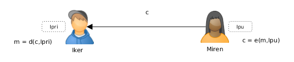
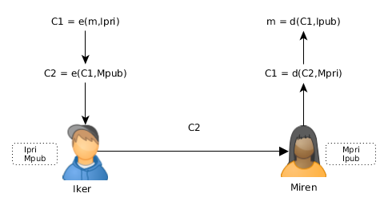
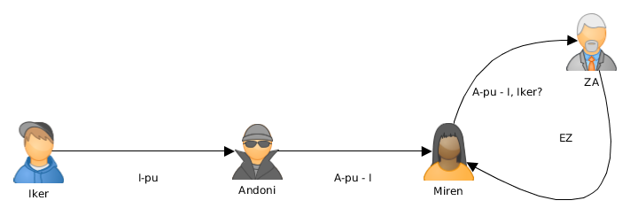

Zifraketa asimetrikoa
Mikel Egaña Aranguren
Klabe publikoko kriptografia
70eko hamarkadaren hasieran, sistema kriptografiko asimetrikoak sortu ziren, gakoa sistema simetrikoetan partekatzeko arazoari irtenbidea emateko
Gako asimetrikoko algoritmoak erabiltzen ditu: zifratzen duen gakoa ez da deszifratzen duena
Klabe publikoko kriptografia
Erabiltzaile bakoitzak bi klabe:
- Gako publikoa, mundu osoak ezagutzen duena
- Erabiltzaileak soilik ezagutzen duen gako pribatua
Erlazio matematiko bat dago beraien artean
Gako batek zifratzen duena besteak deszifratzen du
Klabe publikoko kriptografia

Klabe publikoko kriptografia
- Ikerrek bere gako pribatua du, Ipri, eta mundu guztiak bere gako publikoa du, Ipu
- Mirenek bere mezua zifratzen du Ikerren gako publikoa erabiliz: c = e ( m , Ipu )
- Mirenek c kriptograma Ikerreri bidaltzen dio
- Ikerrek c jasotzen du
- Ikerrek c deszifratzen du bere I gako pribatua erabiliz: m = d ( c , Ipri )
- Konfidentzialtasuna. Ikerrek soilik deszifratu dezake mezua
Klabe publikoko kriptografia

Klabe publikoko kriptografia: Abantailak
- Jasotzaileak soilik irakur dezake mezua
- Gako bakarra gorde behar da
- Edozeinek erabili dezake gako publikoa mezu konfidentziala bidaltzeko Ikerreri
- Gako publikoa komunikatzeko ez dira beharrezkoak kanal seguruak
Klabe publikoko kriptografia: Arazoak
- Gako pribatua sekretupean mantendu behar da
- Gako publikotik gako pribatua ondorioztatzea ia ezinezkoa izan beharko litzateke
- (Des)zifraketa sistema simetrikotan baino geldoagoa da
Klabe publikoko kriptografia: Arazoak
- Mirenek segurtasun osoz jakin behar du Ikerren gako publikoa erabiltzen dagoela
- Gako publikoak lortzea erraza izan behar du
Klabe publikoko kriptografia
Erabiltzaile bakoitzak bere gako bikotea sortzen du (gako publikoa, gako pribatua) eta gako publikoa gakoen zerbitzari batean argitaratzen du: Key Certification Authority edo Key Distribution Center (KDC)
Klabe publikoko kriptografia: Arazo gehiago
- Nola daki Ikerrek mezua benetan Mirenena dela?
- Ikerrek erantzuten duenean, nola daki Mirenek benetan mezua Ikerrena dela?
Klabe publikoko kriptografia
- Ikerrek bere gako pribatuarekin zifratzen badu edonork deszifratu ahal du (Mundu osoak ezagutzen du Ipu)
- Soluzioa:
- Ikerrek bere gako pribatuarekin zifratzen du mezua: C1 = e ( m, Ipri )
- Gero Mirenen gako publikoarekin berriro zifratzen du: C2 = e ( C1 , Mpu )
Klabe publikoko kriptografia
- Mirenek bakarrik deszifratu ahal du bere gako pribatuarekin:
- Konfidentzialtasuna: Mirenek soilik deszifratu ahal du mezua: C1 = d ( C2 , Mpri )
- Kautotzea eta Zapuztezintasuna: Ikerrek soilik bidali ahal izan du mezua: m = d ( C1, Ipu )
Klabe publikoko kriptografia

Klabe publikoko kriptografia
Zer gertatzen da baten bat komunikazio erdigunean jartzen bada
Man in the middle erasoa:
- Bitartekari batek mezu guztiak jasotzen ditu partaideak jakin barik
- Partaideen komunikazio guztietan eskua sartu behar da
Klabe publikoko kriptografia

Klabe publikoko kriptografia
Ikerrek eta Mirenek komunikatzen hasi nahi dutenean, klabe publikoak trukatzen dituzte
Andonik hartzen ditu eta bere klabearekin aldatzen ditu

Klabe publikoko kriptografia
Ikerrek eta Mirenek mezuak zifratzen dituzte USTEZKO bestearen klabe publikoarekin eta beraien klabe pribatuarekin
Andonik mezuak jasotzen ditu, irakurtzen ditu, aldatzen ditu, eta bere klabe pribatuarekin zifratzen ditu
Klabe publikoko kriptografia

Klabe publikoko kriptografia
Ikerrek eta Mirenek modu seguruan komunikatzen ari direla uste dute
Andonik dena irakurtzen du eta nahi beste aldatzen
Ekiditeko:
- Klabeak kanal seguruen bidez elkarbanatu
- Autoritate (erakunde) batek klabe publiko bat norbaiti dagokiola zertifikatzea: Zertifikazio Autoritatea (CA)
Klabe publikoko kriptografia

Zifratu hibridoa
Gako pribatuko sistemak gako publikokoak baino askoz azkarragoak dira
Askotan konbinazio bat erabiltzen da: gako publikoko sistema S gako sekretu bat elkarbanatzeko erabiltzen da, behin soilik erabiliko dena
Gako pribatuko sistemak S erabiltzen du mezua zifratzeko
Zifratu hibridoa
Mirenek S gako sekretua sortzen du, eta bere mezua zifratzeko erabiltzen du: cm = e1 (m,S)
Mirenek S zifratzen du Ikerren gako publikoarekin: cs = e2 ( S , Ipu )
Mirenek [ cm, cs ] bidaltzen dio Ikerreri
Zifratu hibridoa

Zifratu hibridoa
Ikerrek [ cm , cs ] jasotzen du
Ikerrek S deszifratzen du bere gako pribatua erabiliz, Ipri: d2 ( cs , Ipri ) = S
Ikerrek S erabiliz m deszifratzen du: d1 ( cm , S ) = m
Zifratu hibridoa

Gako publikoko algoritmoak
Diffie-Hellman
RSA
ElGamal
DSA
Kurba eliptikoak
Diffie-Hellman
- 1976 - gako publikoko leheneno sistema
- Ez da zifratzeko erabiltzen
- Gako publikoak erabiliz, gako pribatu partekatu bat ezartzen du, gero gako simetriko gisa erabil daitekeena
- Logaritmo diskretuen arazoan oinarritua
RSA
1977 - Rivest–Shamir–Adleman
Diffie-Hellman ez bezala, zifratzeko, deszifratzeko eta sinatzeko balio du, baina moteltasuna dela eta, batez ere sistema hibridoetan erabiltzen da
RSA security: Verisign (SSL, ...)
Zenbaki primoen biderketaren faktorizazioan du oinarria
ElGamal
1984 - Taher Elgamal
Diffie-Hellman-en oinarritua baina zifratzeko, deszifratzeko eta sinatzeko ere erabili daiteke
DSA
1991 - Digital Signature Algorithm
Estatu Batuetako estandarra sinatzeko (FIPS 186-4)
Sinatzeko bakarrik
Kurba eliptikoa
1985
RSA-ren segurtasuna maila bera, baina gako laburragoak
Elliptic Curve Diffie–Hellman (ECDH)
Elliptic Curve Digital Signature Algorithm (ECDSA)
Algoritmos de clave pública: erabilerak
- NAN elektronikoa
- PGP
- SSH
- SSL / TLS
PGP
- RSA / DSA
- IDEA / TripleDES
SSL / TLS
- RSA / DSA / Diffie-Hellman
- IDEA / DES / TripleDES / AES